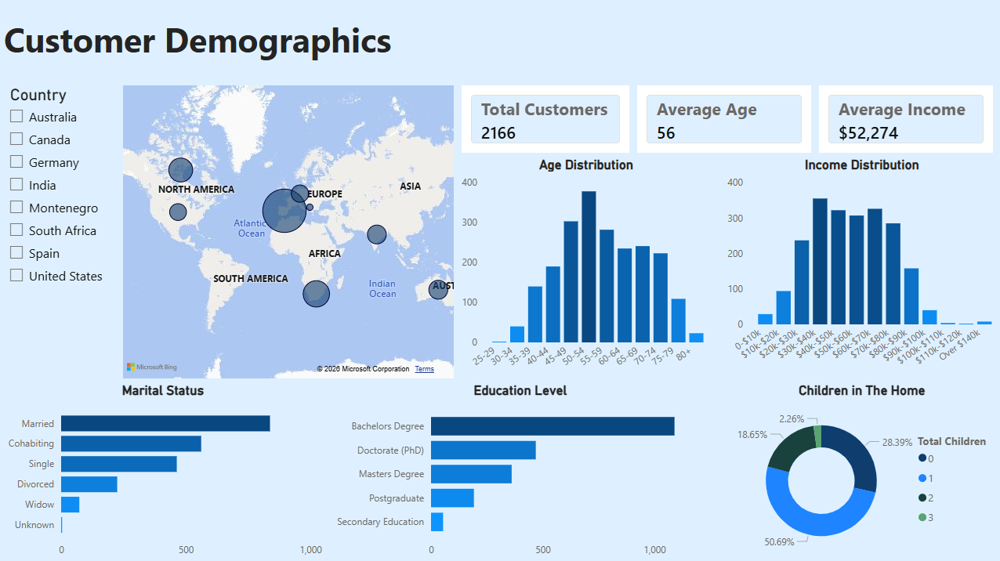
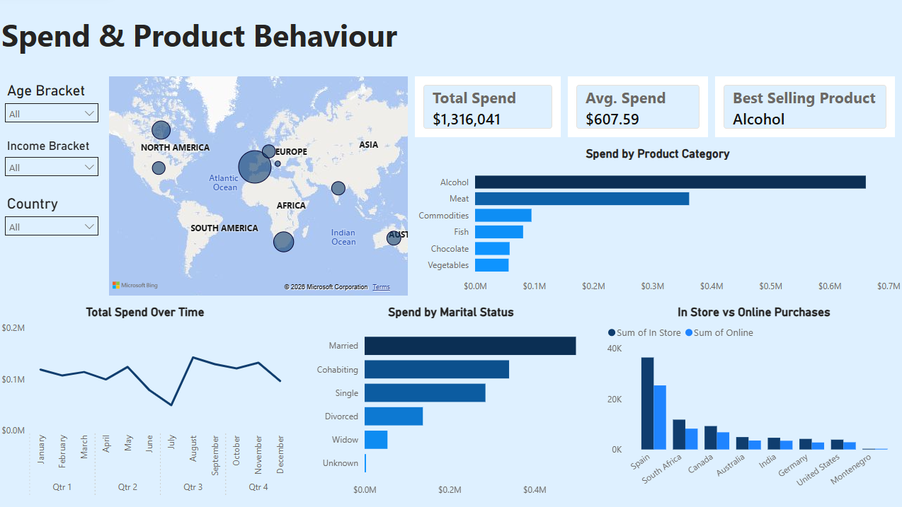
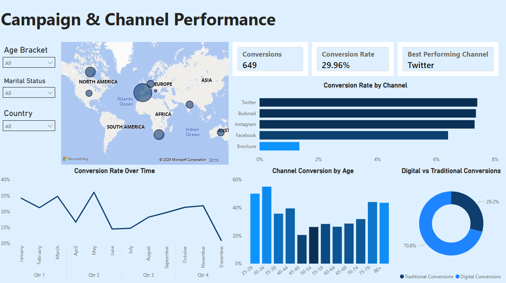
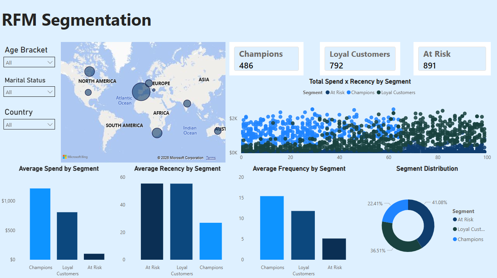

2Market Marketing Analytics
A full-stack analysis of customer demographics, spending behaviour,
campaign performance and RFM segmentation for a global supermarket.

A full-stack analysis of customer demographics, spending behaviour,
campaign performance and RFM segmentation for a global supermarket.

2Market is a global supermarket operating across eight countries. The business wanted to better understand its customer base: who its customers are, what they buy, which marketing channels actually work, and how to segment customers by value. The goal was to turn raw transactional and campaign data into actionable insight that could inform marketing spend and product strategy.
The dataset comprised two tables: 2,216 customer records covering demographics, spend across six product categories, and purchasing behaviour, alongside a campaign table recording successful lead conversions across five advertising channels. After cleaning, the working dataset contained 2,166 customers across Spain, the USA, Canada, Germany, Australia, India, South Africa, and Montenegro.
Tools used: PostgreSQL | Power Query | Power BI | DAX
The project followed a clean three-stage workflow. Power Query handled the data cleaning: income was converted from a formatted string to a numeric field, inconsistent categorical values in marital status and education were standardised, country codes were expanded to full names, and 47 duplicate records were removed. Three customers with implausible ages above 100 were also excluded. Calculated columns for age, total children, and total spend were added at this stage, keeping the SQL clean and focused on analysis rather than transformation.
From there, PostgreSQL drove the analysis across five query files covering demographics, spend, purchase behaviour, conversion analysis, and customer segmentation. Power BI then connected directly to the PostgreSQL database, pulling in the marketing data, ad data, and an RFM segments view created specifically for the dashboard.
One methodological decision worth noting: an earlier version of this analysis calculated channel conversion rates by summing a cumulative conversions field filtered by channel exposure. The problem is that field records total conversions across all channels, not per channel, which inflates the figures and attributes conversions to channels that may not have driven them. The corrected approach sums each channel's own flag directly. This changed the top-performing channel finding from Instagram to Twitter and produces a more defensible, apples-to-apples comparison across channels.
The Power BI report is structured across four pages, each telling a distinct part of the story. Every page follows a consistent layout: a KPI strip at the top, a bubble map as the focal visual, supporting charts across the bottom half, and country, age bracket, and marital status slicers for interactive filtering.
The demographics page answers the question: who is the typical 2Market customer? The answer is a married, degree-educated customer in their mid-50s, based in Spain, earning around $52,000. Spain accounts for nearly half the customer base (1,053 of 2,166 customers), which shapes almost every aggregate metric in the dataset. The age distribution peaks sharply at 50 to 54 and the income distribution follows a roughly normal curve centred around $40,000 to $90,000, with a small but notable tail of very high earners.

The spend page moves from who the customers are to how they shop. Total revenue across the dataset was $1,317,981. Alcohol is the dominant product category by a significant margin, accounting for roughly half of all spend, followed by meat products. The total spend over time chart reveals a clear seasonal pattern, with a sharp trough in June and July before a strong recovery in August. The walk-in versus online purchases chart shows that despite the prevalence of e-commerce, in-store purchases consistently outpace web purchases across every country in the dataset.

The campaign page focuses on what drives conversions. Twitter leads on conversion rate at 7.41%, closely followed by bulkmail at 7.36% and Instagram at 7.31%. Brochures are a distant last at 1.35%. The digital versus traditional donut chart summarises the story neatly: 70.8% of all conversions come from digital channels. Interestingly, this digital dominance holds even for the over-70 age bracket, which challenges the assumption that older customers prefer traditional advertising.

The RFM page is the analytical centrepiece of the project. Using recency, frequency, and monetary value, customers were scored using NTILE window functions and segmented into three tiers. The scatter plot of spend versus recency, coloured by segment, makes the segmentation immediately visible: Champions cluster in the top left (recent, high spend), At Risk customers spread across the right (lapsed, low spend). The supporting bar charts confirm the numbers behind the visual.
Spain dominates every absolute metric. It has the most customers, the highest total spend ($636,151), and the most purchases. The moment you adjust for population size, however, Spain drops to the bottom third on per capita spend at $604. Montenegro, with just three customers, sits at the top at $1,040 per capita. The US and Australia both rank above Spain on per capita metrics too. The lesson is that Spain's prominence is a function of volume, not loyalty or value intensity, and markets like the US and Australia likely represent a more meaningful growth opportunity than the raw numbers suggest.
India builds into one of the more interesting cross-query narratives in the dataset. Indian customers have the lowest web-to-purchase conversion rate at 71.34%, meaning they browse more than they buy. When they do buy, they are the most deal-seeking market at 26.90% of purchases made at a discount. Their overall campaign conversion rate is also the second lowest at 26.03%. Three separate queries, one consistent story: Indian customers are hard to convert, price sensitive, and most engaged when there is an obvious incentive. A discount-led acquisition strategy in that market is not a concession, it is the playbook.
The headline answer is married customers, but that is almost entirely explained by the fact that married customers make up 39% of the customer base. Adjusting for population size changes the picture considerably. Widowed customers spend the most per capita at $736, and childless households dominate the top of the per capita ranking regardless of marital status. Cohabiting customers with no children sit at $1,190 per capita. The DINK (dual income, no kids) segment is clearly the highest-value group in this dataset. Fewer financial responsibilities and greater disposable income is the logical explanation, and it points to where premium or higher-margin product marketing should be directed.
Alcohol is the top spending category across every demographic slice in this dataset, with one exception: customers aged 20 to 30, where meat products take the top spot. There are only seven customers in that bracket so the finding needs to be treated carefully, but it is worth flagging as a potential pattern. For every other age group, marital status, and education level, alcohol leads by a clear margin. The gap between alcohol and the second category (meat) suggests 2Market's product and promotional strategy should lean into that strength.
Over-70s have the highest average income in the dataset at approximately $59,000. PhD holders also lead on average income at $56,000. Both groups rank lower than expected on spend. Over-70s are the third lowest spending age bracket in total despite their income level. PhD holders have the highest per capita spend at $672, but that is still modest relative to their earning power. This gap between income and spend suggests that 2Market's current product range or marketing approach is not fully capturing this segment.
Across every country and every marital status in this dataset, in-store purchases outnumber web purchases. The ratio ranges from 6% to 44% more in-store purchases depending on the segment. For a supermarket operating in 2024, that is a meaningful finding. Investment in digital channels for conversion is clearly worthwhile given the campaign data, but the physical store remains the primary purchase environment for 2Market's customers.
The segmentation produced three tiers. Champions represent 22% of customers (486), purchased an average of 27 days ago, make 15 purchases on average, and spend $1,210 on average. Loyal Customers represent 37% (792 customers) with similar recency to the At Risk group but significantly higher frequency and spend at $807. At Risk customers are the largest segment at 41% of the total base (891 customers). They have not purchased in an average of 55 days, make only five purchases on average, and spend just $101. The spend gap between Champions and At Risk is approximately 12x. Even a partial conversion of At Risk customers into Loyal Customer territory would have a material impact on revenue.
Two queries are worth highlighting as representative of the analytical approach taken in this project.
The segmentation query uses nested CTEs to build the RFM scores in stages. The recency score uses a 4 minus NTILE inversion to ensure customers who purchased recently receive a higher score rather than a lower one, since a lower recency value (fewer days since last purchase) represents a more valuable customer.
with rfm_score as (
with customer_metrics as (
select
id,
recency,
total_spend as monetary_value,
(web_purchases
+ walk_in_purchases) as frequency
from marketing_data
)
select
*,
4 - ntile(3) over(order by recency) as recency_score,
ntile(3) over(order by monetary_value) as monetary_score,
ntile(3) over(order by frequency) as frequency_score
from customer_metrics
)
select
case
when (recency_score + monetary_score + frequency_score)
between 8 and 9 then 'Champions'
when (recency_score + monetary_score + frequency_score)
between 6 and 7 then 'Loyal Customers'
when (recency_score + monetary_score + frequency_score)
between 3 and 5 then 'At Risk'
end as rfm_segment,
count(*) as customer_count,
round(avg(monetary_value), 2) as avg_spend,
round(avg(recency), 2) as avg_recency,
round(avg(frequency), 2) as avg_frequency
from rfm_score
group by 1
order by 2 desc;The channel conversion query went through a meaningful revision during this project. An earlier version summed a cumulative conversions field filtered by each channel's exposure flag. The issue is that field records a customer's total conversions across all channels, not conversions attributable to a specific channel, which inflates every channel's rate and makes inter-channel comparison unreliable. The corrected version sums each channel's own binary flag directly.
-- Corrected channel conversion rate
-- Sums each channel's own flag rather than the cumulative
-- successfully_converted field to avoid cross-channel
-- attribution errors
select
round(sum(twitter_ad)::decimal
/ count(*) * 100, 2) as twitter_rate,
round(sum(instagram_ad)::decimal
/ count(*) * 100, 2) as instagram_rate,
round(sum(bulkmail_ad)::decimal
/ count(*) * 100, 2) as bulkmail_rate,
round(sum(facebook_ad)::decimal
/ count(*) * 100, 2) as facebook_rate,
round(sum(brochure_ad)::decimal
/ count(*) * 100, 2) as brochure_rate
from ad_data;The analysis points to several concrete actions 2Market could take.
The At Risk segment is the most urgent priority. At 41% of the customer base with an average spend of just $101 against a Champions average of $1,210, even a modest conversion rate from At Risk to Loyal Customer territory would be worth pursuing. A targeted re-engagement campaign, potentially with a discount incentive given the data on deal-seeking behaviour, would be the natural starting point.
Brochure advertising should be reviewed seriously. At a 1.35% conversion rate against Twitter's 7.41%, it is converting at less than one-fifth the rate of the best-performing channel. Reallocating that budget toward Twitter, Instagram, or bulkmail would likely improve overall campaign performance without increasing total spend.
Australia and the United States represent an underexploited opportunity. Both rank in the bottom two for campaign conversion rate at 23 to 24%, yet both are English-speaking western markets that could plausibly be reached with a single campaign. Their per capita spend figures are reasonable, suggesting the customers are there and willing to spend, the marketing just is not landing effectively enough yet.
The seasonal pattern in spend data, with a trough in June and July and a peak in August, suggests 2Market should front-load promotional activity into mid-July to capitalise on the August uplift rather than ramping up spend after the peak has already arrived.
Finally, the DINK segment (customers with no children, particularly those who are married or cohabiting) is the highest per capita spending group in the dataset. A premium product or bundled meal deal offer targeted at this group, leaning into the alcohol and meat categories that dominate their spending, is a logical commercial move.
There are a few directions this analysis could go with additional data or time. A deeper dive into the At Risk segment would be valuable, specifically understanding when those customers last engaged and whether there are any demographic patterns that predict the transition from Loyal to At Risk. With time-stamped transaction data rather than a recency field, a proper cohort analysis would also be possible.
On the product side, the data only goes to category-level spend. Knowing which specific product lines drive alcohol's dominance would allow 2Market to make much more targeted stocking and promotional decisions rather than treating alcohol as a monolithic category.
The under-30 age bracket is also worth returning to with more data. Seven customers is too small a sample to conclude anything meaningful, but the reversal of the digital-versus-traditional pattern in that group is interesting enough to warrant investigation if the dataset were to grow.